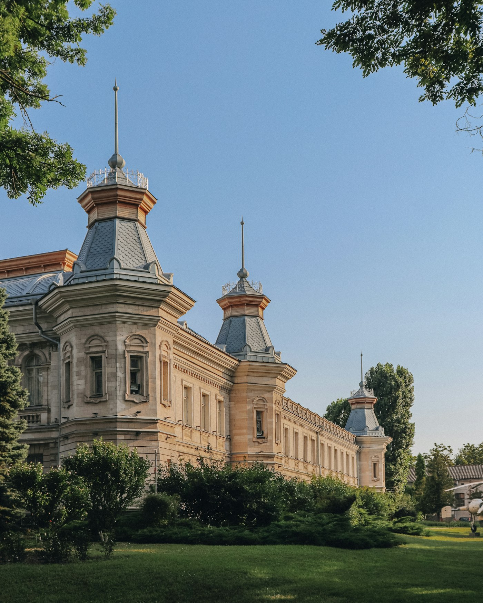

18Vineri · SEP18:00

Artă / Artcor, str. 31 August
Ateliere deschise la Artcor
Intră în studiourile artiștilor. Desene, conversații și un oraș privit cu alți ochi.
Patru idei pentru un weekend care nu seamănă cu cel trecut. Păstrează ce îți place și construiește-ți propria agendă.
Deschide calendarul ↓
Intră în studiourile artiștilor. Desene, conversații și un oraș privit cu alți ochi.

O seară de scurtmetraje locale, pe iarbă. Ia cu tine o pătură și un prieten.
Un traseu prin curți, case și amintiri. Tur ghidat de două ore.

Viniluri, cafea și un trio acustic. Locuri limitate, atmosferă fără grabă.
Instrumente locale pentru agenda culturală urbană. Datele rămân în acest browser și pot fi resetate oricând.
0/30 instrumente configurateMarchează cât de urgent este traseul prin oraș, astfel încât exploratori urbani să obțină descoperiri locale.
Alege criteriul decisiv pentru traseul prin oraș, astfel încât exploratori urbani să obțină descoperiri locale.
Confirmă pregătirea pentru traseul prin oraș, astfel încât exploratori urbani să obțină descoperiri locale.
Fixează limita acceptată pentru traseul prin oraș, astfel încât exploratori urbani să obțină descoperiri locale.
Păstrează detaliul esențial despre traseul prin oraș, astfel încât exploratori urbani să obțină descoperiri locale.
Evaluează încrederea în traseul prin oraș, astfel încât exploratori urbani să obțină descoperiri locale.
Activează alternativa pentru traseul prin oraș, astfel încât exploratori urbani să obțină descoperiri locale.
Selectează momentul ideal pentru traseul prin oraș, astfel încât exploratori urbani să obțină descoperiri locale.
Transmite prioritatea legată de traseul prin oraș, astfel încât exploratori urbani să obțină descoperiri locale.
Notează ce trebuie verificat la traseul prin oraș, astfel încât exploratori urbani să obțină descoperiri locale.
Calibrează confortul pentru traseul prin oraș, astfel încât exploratori urbani să obțină descoperiri locale.
Activează varianta prudentă pentru traseul prin oraș, astfel încât exploratori urbani să obțină descoperiri locale.
Alege avantajul principal al traseul prin oraș, astfel încât exploratori urbani să obțină descoperiri locale.
Stabilește nivelul dorit pentru traseul prin oraș, astfel încât exploratori urbani să obțină descoperiri locale.
Salvează întrebarea despre traseul prin oraș, astfel încât exploratori urbani să obțină descoperiri locale.
Acordă un scor anticipat pentru traseul prin oraș, astfel încât exploratori urbani să obțină descoperiri locale.
Bifează confirmarea privind traseul prin oraș, astfel încât exploratori urbani să obțină descoperiri locale.
Alege canalul potrivit pentru traseul prin oraș, astfel încât exploratori urbani să obțină descoperiri locale.
Setează flexibilitatea pentru traseul prin oraș, astfel încât exploratori urbani să obțină descoperiri locale.
Explică motivul alegerii pentru traseul prin oraș, astfel încât exploratori urbani să obțină descoperiri locale.
Evaluează calitatea percepută a traseul prin oraș, astfel încât exploratori urbani să obțină descoperiri locale.
Activează avertizarea pentru traseul prin oraș, astfel încât exploratori urbani să obțină descoperiri locale.
Alege abordarea favorită pentru traseul prin oraș, astfel încât exploratori urbani să obțină descoperiri locale.
Acordă timpul necesar pentru traseul prin oraș, astfel încât exploratori urbani să obțină descoperiri locale.
Adaugă un reper personal pentru traseul prin oraș, astfel încât exploratori urbani să obțină descoperiri locale.
Măsoară relevanța traseul prin oraș, astfel încât exploratori urbani să obțină descoperiri locale.
Confirmă următoarea acțiune pentru traseul prin oraș, astfel încât exploratori urbani să obțină descoperiri locale.
Selectează stilul de explorare pentru traseul prin oraș, astfel încât exploratori urbani să obțină descoperiri locale.
Ajustează nivelul urmărit pentru traseul prin oraș, astfel încât exploratori urbani să obțină descoperiri locale.
Păstrează concluzia despre traseul prin oraș, astfel încât exploratori urbani să obțină descoperiri locale.